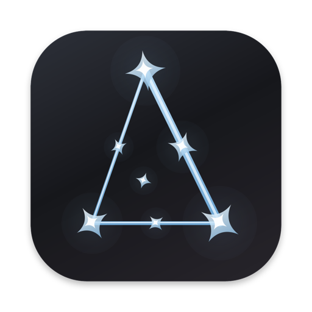
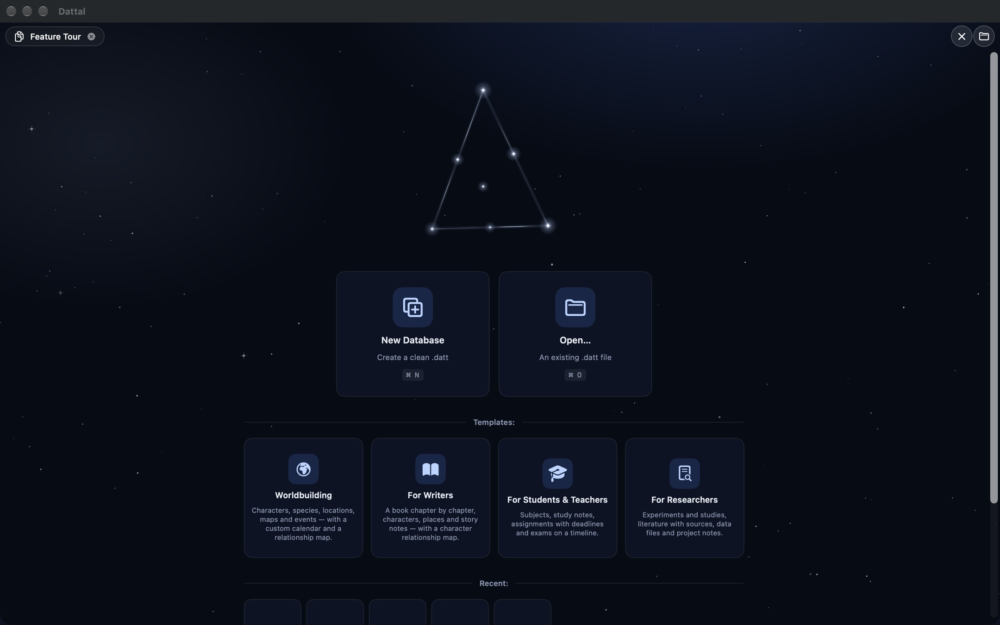
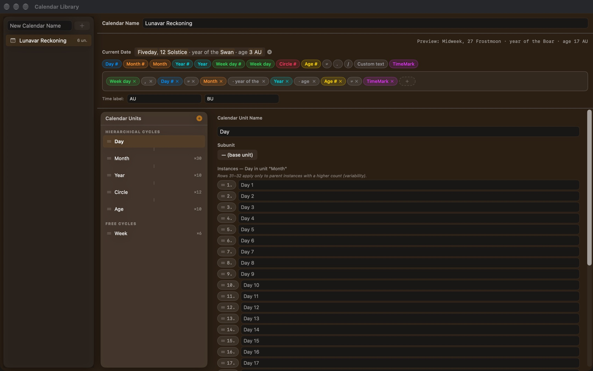
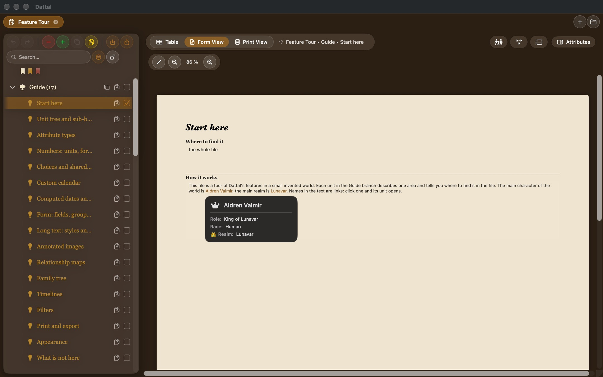
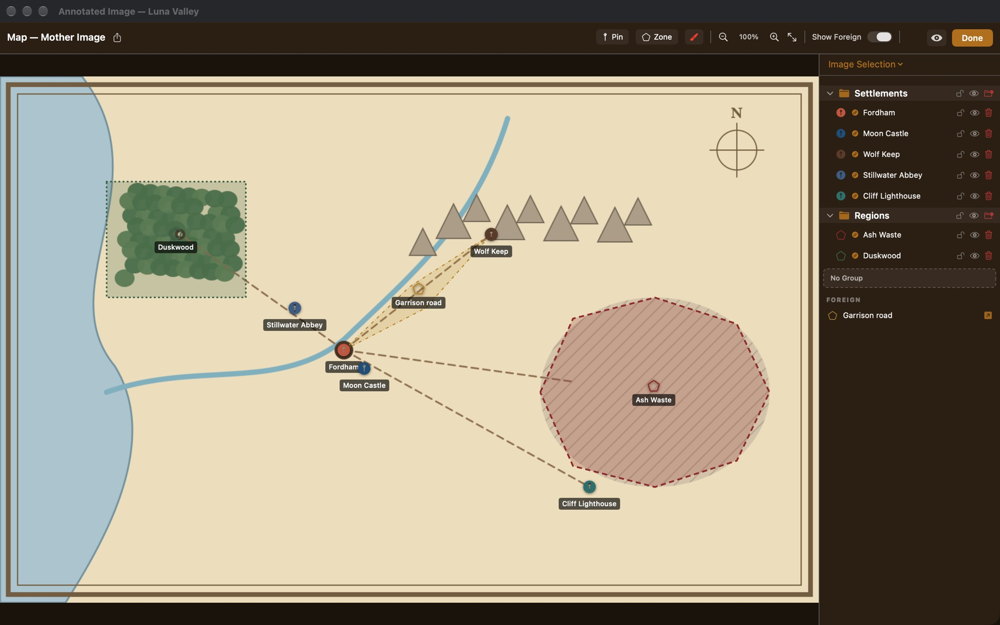
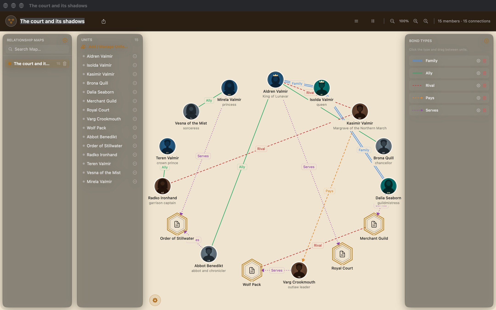
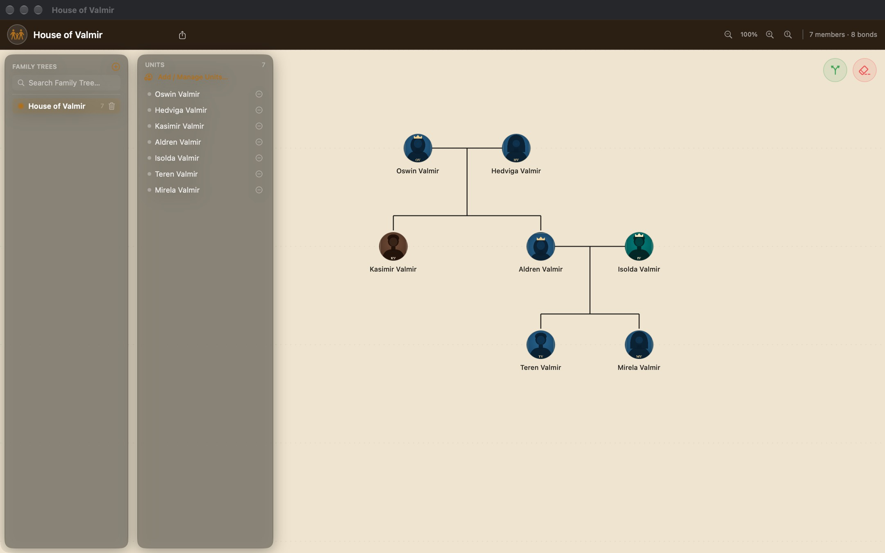
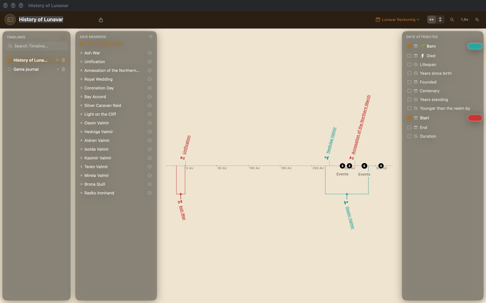

Dattal
EN
SK
DE
ES
RU
Tutorials Návody Anleitungen Tutoriales Уроки
Dattal in a few steps Dattal v pár krokoch Dattal in wenigen Schritten Dattal en pocos pasos Dattal за несколько шагов Short tutorials shown on real windows of the app. Each one plays by itself; click a step to stay on it. Krátke návody na skutočných oknách programu. Každý sa prehráva sám; klikni na krok a ostane na ňom stáť. Kurze Anleitungen an echten Fenstern der App. Jede läuft von selbst ab; klicke auf einen Schritt, um dort zu bleiben. Tutoriales breves sobre ventanas reales de la app. Cada uno se reproduce solo; haz clic en un paso para quedarte en él. Короткие уроки на настоящих окнах приложения. Каждый воспроизводится сам; щёлкни по шагу, чтобы остановиться на нём.
Die Aufnahmen zeigen die englische Oberfläche. Die App selbst gibt es auch auf Deutsch. Las capturas muestran la interfaz en inglés. La app también está en español. На снимках показан английский интерфейс. Само приложение есть и на русском.
Basics Základy Grundlagen Lo básico Основы
Going further Ďalej Weiter Más allá Дальше
3 steps 3 kroky 3 Schritte 3 pasos 3 шага
Your first document Prvý dokument Dein erstes Dokument Tu primer documento Первый документ

1 New Database (⌘N) creates an empty .datt document where you save it. Open… (⌘O) loads an existing one. Nová databáza (⌘N) vytvorí prázdny dokument .datt tam, kam ho uložíš. Otvoriť… (⌘O) načíta existujúci. Neue Datenbank (⌘N) legt ein leeres .datt-Dokument dort an, wo du es sicherst. Öffnen… (⌘O) lädt ein vorhandenes. Nueva base de datos (⌘N) crea un documento .datt vacío donde lo guardes. Abrir… (⌘O) carga uno existente. Новая база данных (⌘N) создаёт пустой документ .datt там, где ты его сохранишь. Открыть… (⌘O) загружает существующий. 2 Templates come with branches and attributes ready for a world, a book, studies or research. You can change everything in them. Šablóny majú pripravené vetvy a atribúty pre svet, knihu, štúdium či výskum. Všetko v nich si môžeš zmeniť. Vorlagen bringen fertige Zweige und Attribute für eine Welt, ein Buch, das Studium oder die Forschung mit. Alles darin kannst du ändern. Las plantillas traen ramas y atributos listos para un mundo, un libro, los estudios o la investigación. Puedes cambiarlo todo. В шаблонах уже есть ветки и атрибуты для мира, книги, учёбы или исследования. Всё в них можно изменить. 3 Every open document is a tab in the top bar. The + button on the right shows the start screen again. Dattal saves as you work. Každý otvorený dokument je tab v hornej lište. Tlačidlo + vpravo ukáže úvodnú obrazovku znova. Dattal ukladá priebežne. Jedes geöffnete Dokument ist ein Tab in der oberen Leiste. Die Taste + rechts zeigt den Startbildschirm wieder. Dattal sichert laufend. Cada documento abierto es una pestaña en la barra superior. El botón + de la derecha vuelve a mostrar la pantalla de inicio. Dattal guarda sobre la marcha. Каждый открытый документ занимает вкладку в верхней панели. Кнопка + справа снова показывает начальный экран. Dattal сохраняет по ходу работы.
5 steps 5 krokov 5 Schritte 5 pasos 5 шагов
Units and branches Jednotky a vetvy Einheiten und Zweige Unidades y ramas Единицы и ветки
1 The tree is on the left. A branch (Characters) holds units (Aldren Valmir). Click a unit to open it. Vľavo je strom. Vetva (Postavy) obsahuje jednotky (Aldren Valmir). Klikom jednotku otvoríš. Links steht der Baum. Ein Zweig (Characters) enthält Einheiten (Aldren Valmir). Ein Klick öffnet die Einheit. A la izquierda está el árbol. Una rama (Characters) contiene unidades (Aldren Valmir). Haz clic en una unidad para abrirla. Слева находится дерево. Ветка (Characters) содержит единицы (Aldren Valmir). Щёлкни по единице, чтобы открыть её. 2 The green + adds a unit to the selected branch (⌘U). The red − removes the selected units. Zelené + pridá jednotku do vybranej vetvy (⌘U). Červené − odstráni vybrané jednotky. Das grüne + fügt dem gewählten Zweig eine Einheit hinzu (⌘U). Das rote − entfernt die ausgewählten Einheiten. El + verde añade una unidad a la rama seleccionada (⌘U). El − rojo elimina las unidades seleccionadas. Зелёный + добавляет единицу в выбранную ветку (⌘U). Красный − удаляет выбранные единицы. 3 Right-click a unit to rename it, change its icon or duplicate it. Pravým klikom jednotku premenuješ, zmeníš jej ikonu alebo ju duplikuješ. Mit einem Rechtsklick benennst du eine Einheit um, änderst ihr Symbol oder duplizierst sie. Con el botón derecho puedes renombrar una unidad, cambiar su icono o duplicarla. Правым щелчком единицу можно переименовать, сменить ей значок или дублировать. 4 Drag a unit onto another unit and it becomes its sub-branch. The tree nests as deep as you need. Potiahni jednotku na inú jednotku a vznikne pod ňou podvetva. Strom sa vnára tak hlboko, ako potrebuješ. Ziehe eine Einheit auf eine andere, und sie wird zu deren Unterzweig. Der Baum verschachtelt sich so tief, wie du es brauchst. Arrastra una unidad sobre otra y pasará a ser su subrama. El árbol se anida tanto como necesites. Перетащи единицу на другую, и она станет её подветкой. Дерево вкладывается так глубоко, как тебе нужно. 5 Search looks through the whole document. Hľadanie prejde celý dokument. Die Suche durchsucht das ganze Dokument. La búsqueda recorre todo el documento. Поиск проходит по всему документу.
5 steps 5 krokov 5 Schritte 5 pasos 5 шагов
Attributes Atribúty Attribute Atributos Атрибуты
1 Libraries ▸ Attributes… (⌘⇧L). An attribute is a field you fill in for units. Type a name, pick a type and click Add. Knižnice ▸ Atribúty… (⌘⇧L). Atribút je pole, ktoré vypĺňaš pri jednotkách. Napíš meno, vyber typ a klikni Pridať. Bibliotheken ▸ Attribute… (⌘⇧L). Ein Attribut ist ein Feld, das du bei Einheiten ausfüllst. Gib einen Namen ein, wähle einen Typ und klicke auf Hinzufügen. Bibliotecas ▸ Atributos… (⌘⇧L). Un atributo es un campo que rellenas en las unidades. Escribe un nombre, elige un tipo y pulsa Añadir. Библиотеки ▸ Атрибуты… (⌘⇧L). Атрибут представляет собой поле, которое ты заполняешь у единиц. Введи название, выбери тип и нажми Добавить. 2 Each type has its own properties. A scale has a range, a number has a unit, a selection has a list of options. Každý typ má svoje vlastnosti. Škála má rozsah, číslo jednotku, výber zoznam možností. Jeder Typ hat eigene Eigenschaften. Eine Skala hat einen Bereich, eine Zahl eine Einheit, eine Auswahl eine Liste von Optionen. Cada tipo tiene sus propiedades. Una escala tiene un rango, un número una unidad y una selección una lista de opciones. У каждого типа свои свойства. У шкалы есть диапазон, у числа единица измерения, у выбора список вариантов. 3 The Attributes button opens the library panel. Drag an attribute from it onto a branch in the tree or straight onto the form. Tlačidlo Atribúty otvorí panel Knižnica. Atribút z neho potiahni na vetvu v strome alebo priamo na formulár. Die Taste Attribute öffnet das Bibliotheksfeld. Ziehe ein Attribut daraus auf einen Zweig im Baum oder direkt auf das Formular. El botón Atributos abre el panel de la biblioteca. Arrastra un atributo desde él a una rama del árbol o directamente al formulario. Кнопка Атрибуты открывает панель библиотеки. Перетащи атрибут из неё на ветку в дереве или прямо на форму. 4 A check mark means the branch already has the attribute. The eye hides it on the form; it stays in the table. Fajka znamená, že vetva atribút už má. Okom ho vo formulári skryješ, v tabuľke ostáva. Ein Häkchen bedeutet, dass der Zweig das Attribut schon hat. Das Auge blendet es im Formular aus, in der Tabelle bleibt es. La marca indica que la rama ya tiene el atributo. El ojo lo oculta en el formulario; en la tabla se mantiene. Галочка означает, что у ветки этот атрибут уже есть. Глаз скрывает его на форме, в таблице он остаётся. 5 Bundles collect attributes into groups. Add a whole group to a branch at once. Balíčky spájajú atribúty do skupín. Celú skupinu pridáš do vetvy naraz. Bundles fassen Attribute zu Gruppen zusammen. Eine ganze Gruppe fügst du einem Zweig auf einmal hinzu. Los paquetes reúnen atributos en grupos. Puedes añadir un grupo entero a una rama de una vez. Наборы объединяют атрибуты в группы. Целую группу можно добавить в ветку за один раз.
4 steps 4 kroky 4 Schritte 4 pasos 4 шага
Three views of your data Tri pohľady na údaje Drei Ansichten deiner Daten Tres vistas de tus datos Три вида твоих данных
1 Table, Form View and Print View show the same data. Switch here or with ⌘1, ⌘2 and ⌘3. Tabuľka, Formulár a Tlačená verzia ukazujú tie isté údaje. Prepínaš ich tu alebo cez ⌘1, ⌘2 a ⌘3. Tabelle, Formularansicht und Druckansicht zeigen dieselben Daten. Wechsle hier oder mit ⌘1, ⌘2 und ⌘3. Tabla, Formulario y Vista de impresión muestran los mismos datos. Cambia aquí o con ⌘1, ⌘2 y ⌘3. Таблица, Форма и Версия для печати показывают одни и те же данные. Переключай их здесь или клавишами ⌘1, ⌘2 и ⌘3. 2 Table: every unit of the branch is a row. Click a cell to edit it. Tabuľka: každá jednotka vetvy je riadok. Klikom do bunky ju upravíš. Tabelle: Jede Einheit des Zweigs ist eine Zeile. Klicke in eine Zelle, um sie zu bearbeiten. Tabla: cada unidad de la rama es una fila. Haz clic en una celda para editarla. Таблица: каждая единица ветки занимает строку. Щёлкни по ячейке, чтобы изменить её. 3 Form View: one unit on a page that you lay out yourself. Formulár: jedna jednotka na strane, ktorú si rozložíš sám. Formularansicht: eine Einheit auf einer Seite, die du selbst gestaltest. Formulario: una unidad en una página que diseñas tú. Форма: одна единица на странице, которую ты компонуешь сам. 4 Print View: set the margins, then print the page or save it as PDF or DOCX. Tlačená verzia: nastavíš okraje a stranu vytlačíš alebo uložíš ako PDF či DOCX. Druckansicht: Lege die Ränder fest und drucke die Seite oder sichere sie als PDF oder DOCX. Vista de impresión: ajusta los márgenes e imprime la página o guárdala como PDF o DOCX. Версия для печати: задай поля, затем распечатай страницу или сохрани её в PDF или DOCX.
4 steps 4 kroky 4 Schritte 4 pasos 4 шага
Filling in values Vypĺňanie údajov Werte ausfüllen Rellenar valores Заполнение значений
1 Click a field and type. The value is saved when you click away. Klikni do poľa a píš. Hodnota sa uloží, keď klikneš mimo. Klicke in ein Feld und schreibe. Der Wert wird gesichert, sobald du daneben klickst. Haz clic en un campo y escribe. El valor se guarda cuando haces clic fuera. Щёлкни по полю и пиши. Значение сохранится, когда ты щёлкнешь вне поля. 2 Set a scale by dragging its knob. A Yes / No switch flips with a click. Škálu nastavíš ťahaním jazdca. Prepínač Áno / Nie prepneš klikom. Eine Skala stellst du durch Ziehen des Reglers ein. Ein Ja-/Nein-Schalter wechselt mit einem Klick. Una escala se ajusta arrastrando el control. Un interruptor Sí / No cambia con un clic. Шкалу задаёшь, перетаскивая ползунок. Переключатель Да / Нет меняется щелчком. 3 A selection can point to units of another branch. Click the name to open that unit. Výber môže ukazovať na jednotky inej vetvy. Klik na meno tú jednotku otvorí. Eine Auswahl kann auf Einheiten eines anderen Zweigs zeigen. Ein Klick auf den Namen öffnet diese Einheit. Una selección puede apuntar a unidades de otra rama. Haz clic en el nombre para abrir esa unidad. Выбор может указывать на единицы другой ветки. Щелчок по имени открывает эту единицу. 4 In the table you fill in the same branch row by row. Handy when you enter many units at once. V tabuľke vypĺňaš tú istú vetvu po riadkoch. Hodí sa, keď zapisuješ veľa jednotiek naraz. In der Tabelle füllst du denselben Zweig Zeile für Zeile aus. Praktisch, wenn du viele Einheiten auf einmal einträgst. En la tabla rellenas la misma rama fila a fila. Resulta práctico cuando introduces muchas unidades a la vez. В таблице ты заполняешь ту же ветку строка за строкой. Удобно, когда вносишь много единиц сразу.
4 steps 4 kroky 4 Schritte 4 pasos 4 шага
A calendar of your own Vlastný kalendár Ein eigener Kalender Un calendario propio Собственный календарь

1 Libraries ▸ Calendars… Build a calendar from units: days in months, months in a year, cycles and ages above them. Knižnice ▸ Kalendáre… Kalendár skladáš z jednotiek: dni v mesiacoch, mesiace v roku, nad nimi cykly a veky. Bibliotheken ▸ Kalender… Einen Kalender baust du aus Einheiten: Tage in Monaten, Monate im Jahr, darüber Zyklen und Zeitalter. Bibliotecas ▸ Calendarios… Un calendario se construye con unidades: días en meses, meses en un año y, por encima, ciclos y eras. Библиотеки ▸ Календари… Календарь собирается из единиц: дни в месяцах, месяцы в году, над ними циклы и эпохи. 2 Each unit has its instances. Name them here: months, days of the week, years of a cycle. Každá jednotka má svoje položky. Tu im dáš mená: mesiace, dni v týždni, roky v cykle. Jede Einheit hat ihre Einträge. Hier gibst du ihnen Namen: Monate, Wochentage, Jahre eines Zyklus. Cada unidad tiene sus elementos. Aquí les pones nombre: meses, días de la semana, años de un ciclo. У каждой единицы есть свои элементы. Здесь ты даёшь им имена: месяцы, дни недели, годы цикла. 3 Build the date format from bubbles. Drag to reorder; Custom text adds words and separators. Zápis dátumu poskladáš z bublín. Ťahaním meníš poradie, Vlastný text pridá slová a oddeľovače. Das Datumsformat setzt du aus Blasen zusammen. Ziehe sie, um die Reihenfolge zu ändern; „Eigener Text“ fügt Wörter und Trennzeichen hinzu. El formato de fecha se compone de burbujas. Arrástralas para cambiar el orden; «Texto propio» añade palabras y separadores. Формат даты складывается из пузырьков. Перетаскивай их, чтобы менять порядок; «Свой текст» добавляет слова и разделители. 4 Current date is “today” in your world. Ages and durations are counted against it. Aktuálny dátum je „dnes“ tvojho sveta. Počítajú sa k nemu veky a trvania. Das aktuelle Datum ist das „Heute“ deiner Welt. Alter und Zeitspannen werden daran gemessen. La fecha actual es el «hoy» de tu mundo. Las edades y duraciones se calculan respecto a ella. Текущая дата означает «сегодня» твоего мира. От неё считаются возрасты и длительности.
6 steps 6 krokov 6 Schritte 6 pasos 6 шагов
Links in text Odkazy v texte Links im Text Enlaces en el texto Ссылки в тексте
1 Names of units in a text can be links. Click a link and its unit opens. Mená jednotiek v texte môžu byť odkazy. Klik na odkaz otvorí jeho jednotku. Namen von Einheiten in einem Text können Links sein. Ein Klick auf den Link öffnet die Einheit. Los nombres de unidades en un texto pueden ser enlaces. Haz clic en un enlace y se abre su unidad. Имена единиц в тексте могут быть ссылками. Щелчок по ссылке открывает её единицу. 2 Click into a text and choose Manage Hyperlinks (the chain icon) in its toolbar. Scan finds unit names in the text, declined forms included. Klikni do textu a v jeho lište zvoľ Spravovať hyperlinky (ikona reťaze). Skenovať nájde v texte mená jednotiek, aj vyskloňované. Klicke in einen Text und wähle in seiner Leiste Hyperlinks verwalten (das Kettensymbol). Scannen findet Namen von Einheiten im Text, auch gebeugte Formen. Haz clic en un texto y elige Gestionar hipervínculos (el icono de cadena) en su barra. Escanear encuentra nombres de unidades en el texto, también declinados. Щёлкни по тексту и в его панели выбери Управлять гиперссылками (значок цепи). Сканировать находит в тексте имена единиц, в том числе в косвенных падежах. 3 Each suggestion shows the unit it will lead to. Change the target in the menu on the right or drop the suggestion with the bin, then Save. Pri každom návrhu vidíš, na ktorú jednotku povedie. Cieľ zmeníš v ponuke vpravo, návrh zahodíš košom a potom dáš Uložiť. Jeder Vorschlag zeigt, zu welcher Einheit er führt. Ändere das Ziel im Menü rechts oder verwirf den Vorschlag mit dem Papierkorb, dann Speichern. Cada sugerencia muestra a qué unidad llevará. Cambia el destino en el menú de la derecha o descarta la sugerencia con la papelera y pulsa Guardar. У каждого предложения видно, на какую единицу оно поведёт. Цель меняется в меню справа, предложение убирается корзиной, затем нажми Сохранить. 4 Saved links are listed below. Dattal remembers a suggestion you dropped and will not offer it again. Uložené odkazy sú dole. Zahodený návrh si Dattal zapamätá a nabudúce ho neponúkne. Gesicherte Links stehen unten. Einen verworfenen Vorschlag merkt sich Dattal und bietet ihn nicht wieder an. Los enlaces guardados aparecen abajo. Dattal recuerda una sugerencia descartada y no volverá a ofrecerla. Сохранённые ссылки показаны ниже. Отклонённое предложение Dattal запоминает и больше его не предлагает. 5 Libraries ▸ Hyperlink library… (⌘⇧H) lists every link in the document. Edit a link's text here or remove the link. Knižnice ▸ Knižnica hyperlinkov… (⌘⇧H) ukáže všetky odkazy v dokumente. Text odkazu tu upravíš alebo odkaz odstrániš. Bibliotheken ▸ Hyperlink-Bibliothek… (⌘⇧H) zeigt alle Links im Dokument. Hier bearbeitest du den Text eines Links oder entfernst den Link. Bibliotecas ▸ Biblioteca de hipervínculos… (⌘⇧H) muestra todos los enlaces del documento. Aquí editas el texto de un enlace o lo eliminas. Библиотеки ▸ Библиотека гиперссылок… (⌘⇧H) показывает все ссылки документа. Здесь можно изменить текст ссылки или удалить её. 6 A unit with an everyday name would be suggested all the time. Right-click it and choose Don't Suggest Links to This Unit. Jednotka s bežným menom by sa navrhovala stále. Pravý klik na ňu a Nenavrhovať odkazy na túto jednotku ju z návrhov vyradí. Eine Einheit mit einem Alltagsnamen würde ständig vorgeschlagen. Rechtsklick darauf und Keine Links auf diese Einheit vorschlagen. Una unidad con un nombre corriente se sugeriría continuamente. Haz clic derecho en ella y elige No sugerir enlaces a esta unidad. Единица с обычным словом в названии предлагалась бы постоянно. Щёлкни по ней правой кнопкой и выбери Не предлагать ссылки на эту единицу.
5 steps 5 krokov 5 Schritte 5 pasos 5 шагов
Preview cards Karty náhľadu Vorschaukarten Tarjetas de vista previa Карточки предпросмотра

1 Hover a link and a card of that unit appears with the attributes you chose. Prejdi myšou nad odkaz a ukáže sa karta jednotky s atribútmi, ktoré si vyberieš. Fahre mit der Maus über einen Link, und es erscheint eine Karte der Einheit mit den Attributen, die du auswählst. Pasa el cursor sobre un enlace y aparece una tarjeta de esa unidad con los atributos que elijas. Наведи курсор на ссылку, и появится карточка единицы с атрибутами, которые ты выберешь. 2 What the card shows is set in Settings (⌘,) on the Previews tab. The setting is saved with the file. Čo karta ukáže, nastavíš v Nastaveniach (⌘,) na záložke Náhľady. Nastavenie sa ukladá so súborom. Was die Karte zeigt, legst du in den Einstellungen (⌘,) im Tab Vorschauen fest. Die Einstellung wird mit der Datei gesichert. Lo que muestra la tarjeta se define en Ajustes (⌘,), en la pestaña Vistas previas. El ajuste se guarda con el archivo. Что показывает карточка, задаётся в Настройках (⌘,) на вкладке Предпросмотры. Настройка сохраняется вместе с файлом. 3 Each place has a card of its own: a link in a text, an annotation, a timeline, a relationship map and a family tree. Každé miesto má vlastnú kartu: odkaz v texte, anotácia, časová os, vzťahová mapa a rodokmeň. Jeder Ort hat eine eigene Karte: Link im Text, Annotation, Zeitleiste, Beziehungskarte und Stammbaum. Cada lugar tiene su propia tarjeta: enlace en un texto, anotación, línea de tiempo, mapa de relaciones y árbol genealógico. У каждого места своя карточка: ссылка в тексте, аннотация, временная шкала, карта связей и родословная. 4 On the left, pick the attributes the card shows. The unit's name and icon are always on it. Vľavo vyber atribúty, ktoré karta ukáže. Meno a ikona jednotky sú na nej vždy. Links wählst du die Attribute, die die Karte zeigt. Name und Symbol der Einheit stehen immer darauf. A la izquierda eliges los atributos que muestra la tarjeta. El nombre y el icono de la unidad siempre aparecen. Слева выбери атрибуты, которые покажет карточка. Имя и значок единицы есть на ней всегда. 5 On the right, split the card into areas with lines and drag attributes into them. An image fills its whole area. Vpravo kartu rozdelíš čiarami na oblasti a atribúty do nich potiahneš. Obrázok zaberie celú oblasť. Rechts teilst du die Karte mit Linien in Bereiche und ziehst Attribute hinein. Ein Bild füllt seinen ganzen Bereich. A la derecha divides la tarjeta en áreas con líneas y arrastras atributos a ellas. Una imagen ocupa toda su área. Справа карточка делится линиями на области, в которые перетаскиваются атрибуты. Изображение занимает всю свою область.
5 steps 5 krokov 5 Schritte 5 pasos 5 шагов
A map with pins and zones Mapa so špendlíkmi a zónami Eine Karte mit Pins und Zonen Un mapa con chinchetas y zonas Карта с булавками и зонами

1 In the annotated image editor, turn on Pin and click the image, or turn on Zone and outline an area in one drag. V editore anotovaného obrázka zapni Pin a klikni do obrázka, alebo zapni Zónu a obtiahni plochu jedným ťahom. Schalte im Editor des annotierten Bildes Pin ein und klicke ins Bild, oder schalte Zone ein und umfahre eine Fläche in einem Zug. En el editor de la imagen anotada, activa Pin y haz clic en la imagen, o activa Zona y rodea un área de un solo trazo. В редакторе аннотированного изображения включи Пин и щёлкни по изображению либо включи Зону и обведи область одним движением. 2 Every annotation is listed on the right. Click its name to rename it. Každá anotácia je v zozname vpravo. Klikom na meno ju premenuješ. Jede Annotation steht in der Liste rechts. Ein Klick auf den Namen benennt sie um. Cada anotación aparece en la lista de la derecha. Haz clic en su nombre para renombrarla. Каждая аннотация есть в списке справа. Щёлкни по названию, чтобы переименовать её. 3 To link an annotation to a unit, hover its row in the list, choose Link Unit… and pick the unit. Anotáciu prepojíš s jednotkou takto: prejdi myšou nad jej riadok v zozname, zvoľ Linkovať jednotku… a vyber jednotku. So verknüpfst du eine Annotation mit einer Einheit: Fahre über ihre Zeile in der Liste, wähle Einheit verknüpfen… und suche die Einheit aus. Para enlazar una anotación con una unidad, pasa el cursor por su fila en la lista, elige Enlazar unidad… y selecciona la unidad. Чтобы связать аннотацию с единицей, наведи курсор на её строку в списке, выбери Связать единицу… и укажи единицу. 4 A linked annotation takes the unit's name and icon. Click it to open that unit; hover it to see the unit's preview card. Prepojená anotácia preberie meno a ikonu jednotky. Klik na ňu tú jednotku otvorí, prejdenie myšou ukáže jej kartu náhľadu. Eine verknüpfte Annotation übernimmt Namen und Symbol der Einheit. Ein Klick öffnet die Einheit, beim Überfahren erscheint ihre Vorschaukarte. Una anotación enlazada toma el nombre y el icono de la unidad. Haz clic para abrir la unidad; al pasar el cursor aparece su tarjeta de vista previa. Связанная аннотация берёт имя и значок единицы. Щелчок открывает эту единицу, наведение показывает её карточку предпросмотра. 5 Sort annotations into groups, lock them and hide them with the icons on each row. Anotácie triediš do skupín, zamykáš a skrývaš ikonami v každom riadku. Annotationen ordnest du in Gruppen, sperrst sie und blendest sie mit den Symbolen in jeder Zeile aus. Ordena las anotaciones en grupos, bloquéalas y ocúltalas con los iconos de cada fila. Аннотации раскладываются по группам, блокируются и скрываются значками в каждой строке.
4 steps 4 kroky 4 Schritte 4 pasos 4 шага
A relationship map Mapa vzťahov Eine Beziehungskarte Un mapa de relaciones Карта связей

1 Libraries ▸ Relationship Maps… (⌘⇧M). The maps of the document are listed on the left. Knižnice ▸ Vzťahové mapy… (⌘⇧M). Vľavo je zoznam máp dokumentu. Bibliotheken ▸ Beziehungskarten… (⌘⇧M). Links stehen die Karten des Dokuments. Bibliotecas ▸ Mapas de relaciones… (⌘⇧M). A la izquierda está la lista de mapas del documento. Библиотеки ▸ Карты связей… (⌘⇧M). Слева находится список карт документа. 2 Add units from any branch to the map: characters, factions, places. Do mapy pridaj jednotky z ľubovoľných vetiev: postavy, frakcie, miesta. Füge der Karte Einheiten aus beliebigen Zweigen hinzu: Figuren, Fraktionen, Orte. Añade al mapa unidades de cualquier rama: personajes, facciones, lugares. Добавляй на карту единицы из любых веток: персонажей, фракции, места. 3 Define bond types. Each has a name, a colour, a line style and a direction. Nastav typy väzieb. Každý má meno, farbu, štýl čiary a smer. Lege Bindungstypen fest. Jeder hat einen Namen, eine Farbe, einen Linienstil und eine Richtung. Define los tipos de vínculo. Cada uno tiene nombre, color, estilo de línea y dirección. Задай типы уз. У каждого есть название, цвет, стиль линии и направление. 4 Click a bond type and drag between two units. Nodes show the portrait and the role. Klikni na typ väzby a ťahaj medzi dvoma jednotkami. Uzly ukazujú portrét a rolu. Klicke auf einen Bindungstyp und ziehe zwischen zwei Einheiten. Knoten zeigen Porträt und Rolle. Haz clic en un tipo de vínculo y arrastra entre dos unidades. Los nodos muestran el retrato y el rol. Щёлкни по типу уз и протяни линию между двумя единицами. Узлы показывают портрет и роль.
5 steps 5 krokov 5 Schritte 5 pasos 5 шагов
A family tree Rodokmeň Ein Stammbaum Un árbol genealógico Родословная

1 Libraries ▸ Family Trees… (⌘⇧R). The trees of the document are listed on the left; the + button adds a new one. Knižnice ▸ Rodokmene… (⌘⇧R). Vľavo je zoznam rodokmeňov dokumentu, tlačidlo + pridá nový. Bibliotheken ▸ Stammbäume… (⌘⇧R). Links stehen die Stammbäume des Dokuments, die Taste + legt einen neuen an. Bibliotecas ▸ Árboles genealógicos… (⌘⇧R). A la izquierda están los árboles del documento; el botón + añade uno nuevo. Библиотеки ▸ Родословные… (⌘⇧R). Слева находится список родословных документа, кнопка + добавляет новую. 2 With Add / Manage Units… choose who belongs to the tree. Cez Pridať / spravovať jednotky… vyberieš, kto do rodokmeňa patrí. Mit Einheiten hinzufügen / verwalten… wählst du, wer zum Stammbaum gehört. Con Añadir / gestionar unidades… eliges quién pertenece al árbol. Через Добавить / управлять единицами… выбираешь, кто входит в родословную. 3 The green button (Q) turns on the parent bond: drag from a parent to a child. The red one (D) removes a bond when you drag between two units. Zelené tlačidlo (Q) zapne rodičovskú väzbu: ťahaj z rodiča na dieťa. Červené (D) väzbu zmaže, keď potiahneš medzi dvoma jednotkami. Die grüne Taste (Q) schaltet die Elternbindung ein: Ziehe von einem Elternteil zum Kind. Die rote (D) löscht eine Bindung, wenn du zwischen zwei Einheiten ziehst. El botón verde (Q) activa el vínculo de progenitor: arrastra del progenitor al hijo. El rojo (D) borra un vínculo al arrastrar entre dos unidades. Зелёная кнопка (Q) включает родительскую связь: тяни от родителя к ребёнку. Красная (D) удаляет связь, когда протягиваешь между двумя единицами. 4 Two parents of the same child are drawn as a couple. Each unit shows its portrait. Dvaja rodičia spoločného dieťaťa sa nakreslia ako pár. Každá jednotka ukazuje svoj portrét. Zwei Eltern desselben Kindes werden als Paar gezeichnet. Jede Einheit zeigt ihr Porträt. Los dos progenitores de un mismo hijo se dibujan como pareja. Cada unidad muestra su retrato. Два родителя общего ребёнка рисуются как пара. Каждая единица показывает свой портрет. 5 The export button saves the tree as a PDF or prints it. Tlačidlo exportu rodokmeň uloží ako PDF alebo vytlačí. Die Exporttaste sichert den Stammbaum als PDF oder druckt ihn. El botón de exportación guarda el árbol como PDF o lo imprime. Кнопка экспорта сохраняет родословную в PDF или печатает её.
5 steps 5 krokov 5 Schritte 5 pasos 5 шагов
A timeline Časová os Eine Zeitleiste Una línea de tiempo Временная шкала

1 Libraries ▸ Timelines… (⌘⇧O). A document can have several timelines; the + button adds one. Knižnice ▸ Časové osi… (⌘⇧O). Dokument môže mať viac osí, tlačidlo + pridá ďalšiu. Bibliotheken ▸ Zeitleisten… (⌘⇧O). Ein Dokument kann mehrere Zeitleisten haben, die Taste + legt eine weitere an. Bibliotecas ▸ Líneas de tiempo… (⌘⇧O). Un documento puede tener varias líneas de tiempo; el botón + añade otra. Библиотеки ▸ Временные шкалы… (⌘⇧O). В документе может быть несколько шкал, кнопка + добавляет ещё одну. 2 Add the units that belong on the axis: events, characters, anything with a date. Pridaj jednotky, ktoré majú na osi byť: udalosti, postavy, čokoľvek s dátumom. Füge die Einheiten hinzu, die auf die Achse gehören: Ereignisse, Figuren, alles mit einem Datum. Añade las unidades que deben estar en el eje: eventos, personajes, cualquier cosa con fecha. Добавь единицы, которые должны быть на оси: события, персонажей, всё, у чего есть дата. 3 On the right, tick the date attributes that are drawn on the axis and give each a colour. Vpravo zaškrtni dátumové atribúty, ktoré sa na osi kreslia, a každému daj farbu. Rechts hakst du die Datumsattribute an, die auf der Achse gezeichnet werden, und gibst jedem eine Farbe. A la derecha, marca los atributos de fecha que se dibujan en el eje y dale un color a cada uno. Справа отметь атрибуты даты, которые рисуются на оси, и задай каждому цвет. 4 Events close together merge into a bubble with a count. Click a unit in the list and the axis centres on it. Blízke udalosti sa zlúčia do bubliny s počtom. Klik na jednotku v zozname na ňu os vycentruje. Nah beieinander liegende Ereignisse verschmelzen zu einer Blase mit Anzahl. Ein Klick auf eine Einheit in der Liste zentriert die Achse darauf. Los eventos cercanos se agrupan en una burbuja con su número. Haz clic en una unidad de la lista y el eje se centra en ella. Близкие события сливаются в пузырёк с числом. Щелчок по единице в списке центрирует ось на ней. 5 At the top you switch the calendar of the axis, its orientation and the zoom. Hore prepneš kalendár osi, jej orientáciu a priblíženie. Oben wechselst du den Kalender der Achse, ihre Ausrichtung und den Zoom. Arriba cambias el calendario del eje, su orientación y el zoom. Вверху переключаются календарь оси, её ориентация и масштаб.